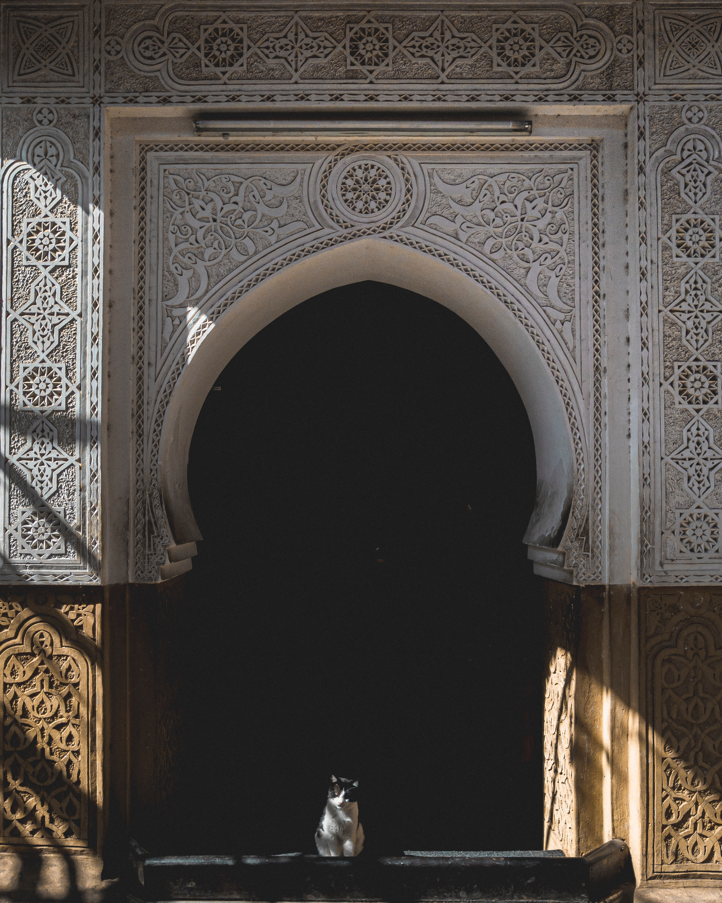

Marrakech
Introduction
Marrakech is the second largest city of Morocco and is known as the Red City. It has about 800,000 inhabitants and most of the houses are colored read. Marrakech MedinaIt is truly a colorful city of entertainment and is called the one of the pearls of morocco. It is the major economic center and has several upcoming industries and markets. It lies at the foot of the Atlas Mountains and this gives it a very beautiful location. Like many north African cities it is mainly divided into medina which is the old fortified city and a modern city nearby (called Gueliz). The city has a wonder climate with shimmering white snowy winters and warm humid summers. It is the warmth and the sociability of the inhabitants that is world-renowned.

History
The name probably has been derived from Berber words ‘ mur(n) akush ‘ which means the land of god. Till a few decades ago, the Arabs, Persians, and Europeans, called Morocco the Kingdom of Marrakech. It was founded in the 11th century and was the capital of an empire that stretched from Spain to Senegal.
In earlier times it was a major location on the crossroads of caravans going in the direction of Timbuktu for trade. Though initially just used as a resting place it was later was taken over by the leader of Almoravids, Abou Bekr as a strategic location for troops. His cousin Youssuf Ibn Taschfin built the first mosque and a house.
The 12-century saw it being further developed by the Almohads. Even now you can find the 9km red earth wall built during the Almoravid rule. It became came under the Saadian Empire of Ahmed El Arj in the 16th century. They build many impressive buildings and tombs which have been well preserved.
Later on it was conquered by the Sultan of Alaouits- Moulay Ismail. 1917 saw it being governed by Pasha El Glaoui under the French rule. In 1956 it was taken over by King Mohammed V but after his death the fortunes were confiscated. Later on the capital was shifted to Rabat and Marrakech became a provincial capital. It is now the capital of Marrakech Tensift el Haouz region with an area of 31,160kms.
What To Do In Marrakech
You would find it very interesting to roam around the city of Marrakech. The little souks in the small alleys and squares are very interesting and you can find them dedicated to specific crafts. You can even watch part of their process of making them.
The best time to visit them is early morning or late afternoon when they auction their stuff. You can go around the souks in about 3 hours. A major attraction with tourists is the Rue Souk Smarine a major textile market which is at the vicinity of the Ouessabine mosque.